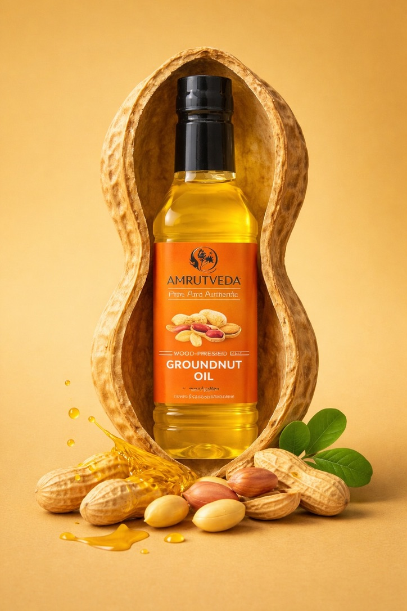
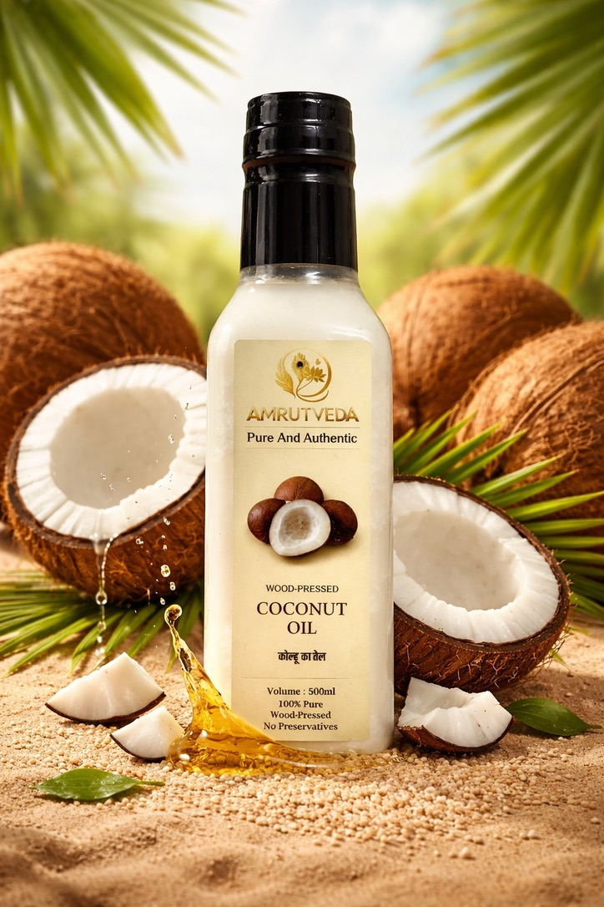
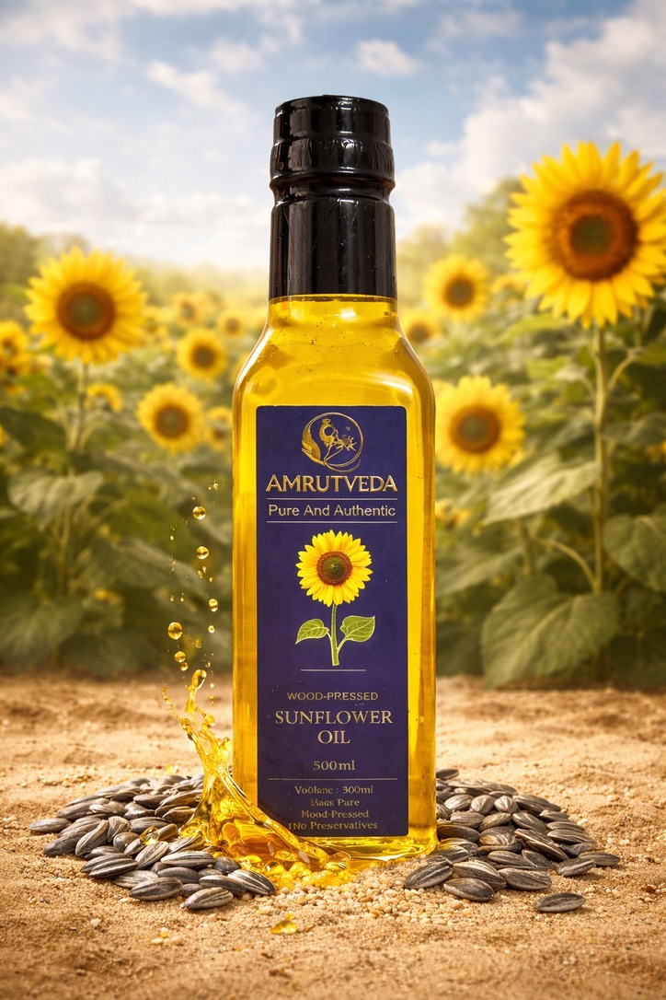
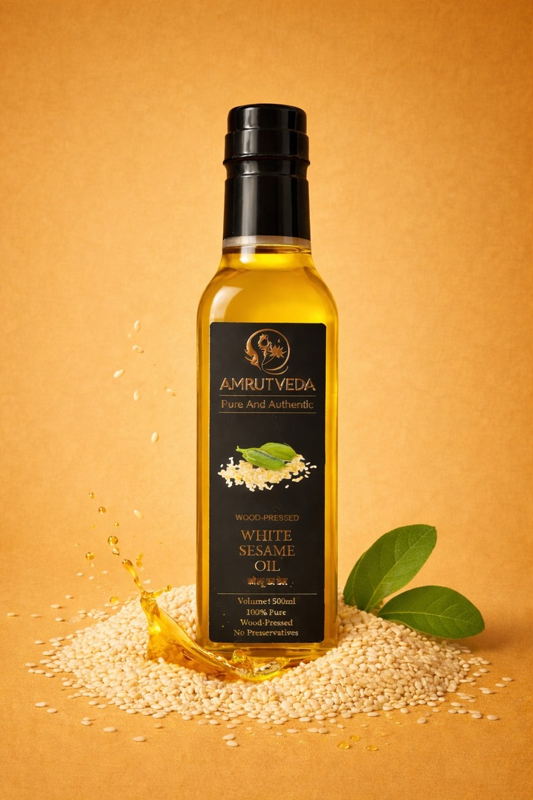
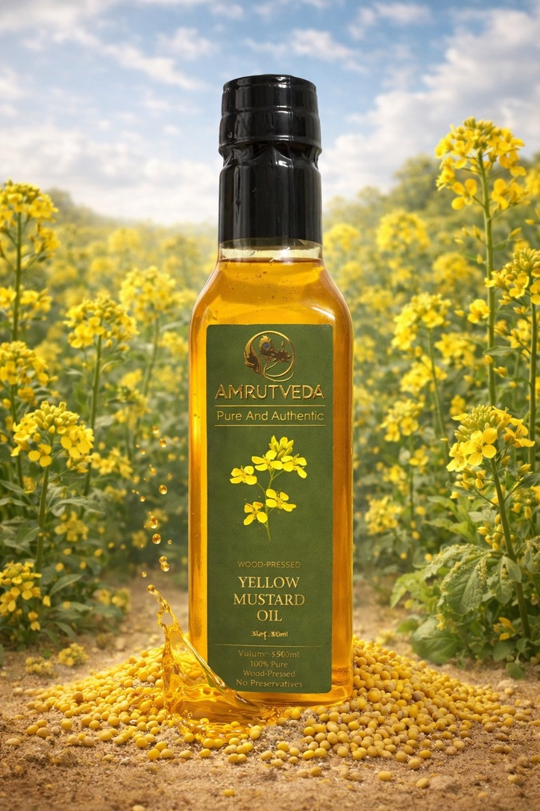
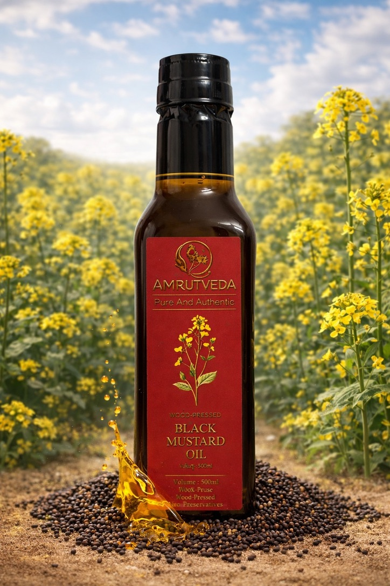
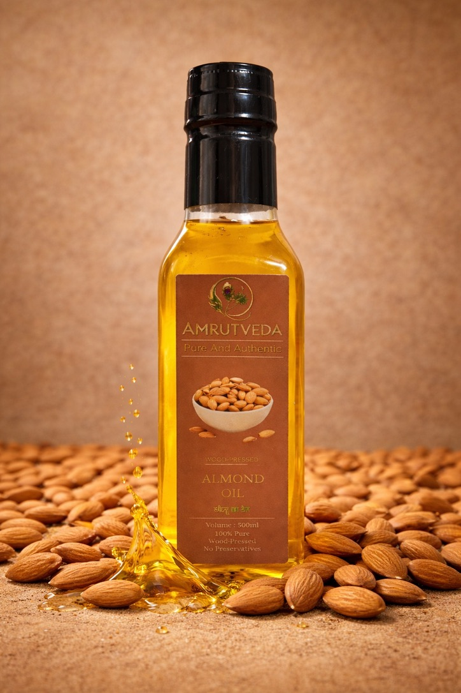
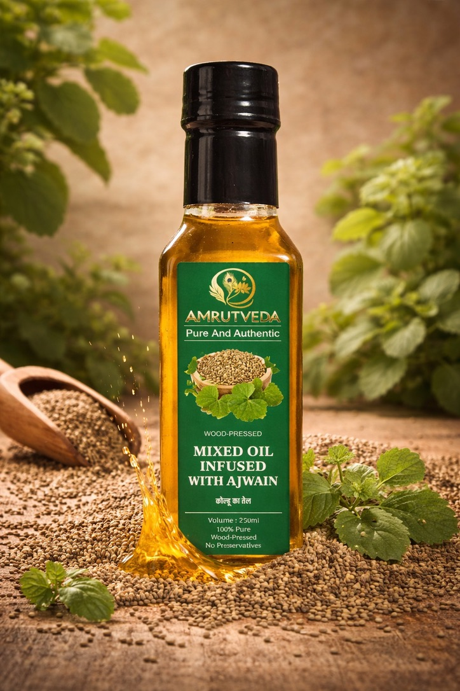

Elixir of Nature, With Utmost Purity
100% Pure · Wood-Pressed · No Preservatives · Made in India
Explore Our OilsAmrutveda was born from a simple belief — that the best nourishment comes from nature, untouched and unrefined. In a world of chemically processed oils, we chose the ancient path: the wooden ghani, slow-pressed at low temperatures, preserving every drop of goodness that nature intended.
Our oils carry the warmth of traditional Indian kitchens, the wisdom of Ayurveda, and the promise of purity in every bottle. No hexane. No bleach. No deodorisation. Just the oil, as it was always meant to be.

Modern refined oils are extracted using chemical solvents at very high temperatures — stripping away nutrients, flavour, and life. Wood-pressed (cold-pressed / kachi ghani) oils are different.
Low-temperature pressing preserves natural vitamins, antioxidants, and essential fatty acids that are destroyed in refining.
No hexane, no bleaching agents, no deodorisers. What goes in is seeds; what comes out is pure oil.
The natural aroma and taste of the seed is retained — your food tastes the way it used to in your grandmother's kitchen.
Naturally occurring Vitamin E, Omega-3 & 6 fatty acids, and phytosterols support heart health, immunity, and metabolism.
Most households in India cook with refined oils every day — not knowing what the refining process does to the oil, and ultimately, to their bodies.
Refined oils are extracted using hexane — an industrial chemical solvent. Traces remain in the oil you consume.
Heated above 200°C, the natural fatty acids oxidise and form harmful compounds including trans fats linked to heart disease.
Trans fats and oxidised lipids raise LDL (bad cholesterol), increase inflammation, and are directly linked to cardiovascular disease.
To mask the rancid smell from processing, oils are bleached with chemicals and deodorised at high pressure — stripping all nutrients.
Certain refined oils contain endocrine-disrupting compounds that interfere with hormonal balance, especially with long-term daily consumption.
After refining, bleaching, and deodorising, the oil is nutritionally empty — no vitamins, no antioxidants, no natural fatty acids remain.
Watch: The truth about refined oils
The good news? The switch is simple.
Explore Amrutveda Oils →Every oil is cold-pressed in small batches, bottled fresh, and shipped to your home with zero compromise on quality.
A staple of Indian cooking with a naturally nutty flavour. Rich in monounsaturated fats and Vitamin E, it supports heart health, reduces bad cholesterol, and has a high smoke point — making it ideal for everyday cooking, sautéing, and deep-frying.

Pressed from fresh coconut flesh, this oil is rich in medium-chain triglycerides (MCTs) that the body converts to instant energy. A beloved Ayurvedic oil with powerful antimicrobial and anti-inflammatory properties — equally at home in the kitchen and in your skincare routine.

Light, mild, and versatile — wood-pressed sunflower oil is packed with Vitamin E and linoleic acid. Unlike refined sunflower oil, ours retains its natural golden colour and gentle flavour, making it perfect for salads, light cooking, and as a base for homemade dressings.

Called "Til ka Tel" in Ayurveda, sesame oil has been revered for over 5,000 years. Wood-pressed white sesame oil has a lighter colour and milder taste than its toasted counterpart. It is loaded with sesamolin and sesamin — powerful lignans that act as antioxidants and protect the liver.

Milder and less pungent than its black counterpart, yellow mustard oil offers a warm, slightly spicy flavour. It is rich in erucic acid, Omega-3, and allyl isothiocyanate — a natural compound with strong antibacterial and antifungal properties. A favourite in North Indian and Bengali cooking.

The more traditional and pungent of the two mustard varieties, black mustard oil is the cornerstone of authentic Indian pickles, tadkas, and marinades. Its sharp flavour and aroma come from allyl isothiocyanate — a potent antimicrobial compound. Also excellent for scalp massages and joint pain relief.

Pure, cold-pressed from whole sweet almonds. Almond oil is one of the most nutrient-dense oils available — brimming with Vitamin E, monounsaturated fats, and zinc. While it shines in skincare and haircare, it is also a wonderful light drizzle on salads, smoothies, and warm porridges.

Pressed from carom seeds — a staple in Ayurvedic medicine. Ajwain oil contains thymol, a potent compound with powerful antiseptic, antibacterial, and antifungal properties. It is most known for its ability to soothe digestive ailments, relieve bloating, and ease respiratory discomfort. A therapeutic oil for the whole family.
Ancient cold-press technique, no heat, no chemicals
Sourced directly from trusted Indian farmers
100% natural — what you see is what you get
Pressed fresh in small quantities for maximum freshness
Whether you have a question about our oils, want to place a bulk order, or simply want to talk about the goodness of wood-pressed oils — reach out. We're a small, passionate team and we reply personally.